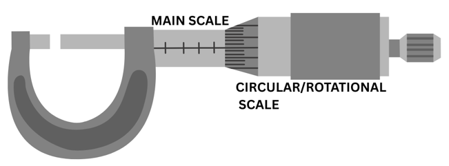

🏠 ← Home
Micrometer Screw Gauge

Data
Reading :
Main scale
=
mm
Reading :
Circular scale
(position in line)
=
Value of smallest division main scale
=
mm
No. of small division on circular scale
=
Zero error
(if available)
=
mm
Note :
Main Scale - reading on the main scale shows
Circular Scale - reading on the circular scale that is in line with the main scale
Zero error - zero mark of the vernier scale does not coincide with the zero mark of the main scale
Obtained reading = Main Scale + Vernier Scale
True reading = Obtained reading - (Zero error)
Result
OBTAINED READING
=
mm
TRUE READING (with zero error)
=
mm